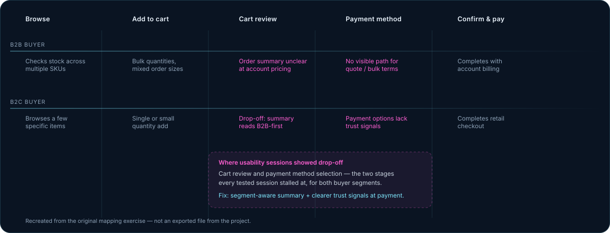

Würth UAE eShop
A fastener and tooling wholesaler's online shop, redesigned around how trade buyers actually reorder: fast, repeatable, and trustworthy enough to move real procurement budgets online.
The challenge
Würth UAE sells tools, fasteners and industrial supplies to both trade professionals and individual buyers across the GCC. The existing checkout flow was built for a single buyer type and leaked conversions at exactly the moment it mattered most: between adding items to cart and completing payment.
B2B buyers needed bulk reorder, quote requests and account-level pricing; B2C buyers needed something closer to a standard retail checkout. Serving both through one undifferentiated flow meant neither got what they needed, and usability testing showed drop-off was concentrated around cart review and payment method selection.
Research
I ran usability testing across both buyer segments to find where the flow actually broke down, rather than guessing from analytics alone — watching trade and retail buyers attempt a real checkout, not just reviewing drop-off numbers after the fact. That surfaced two specific friction points, consistent across sessions: unclear order summaries at cart review, and a lack of trust signals and clarity at payment method selection. B2B buyers in particular stalled when the flow didn't visibly account for account-level pricing or a bulk/quote path.
How I'm measuring the 18%: conversion was tracked as completed-checkout rate against site traffic, comparing the period before the redesign shipped to the period after, on the same eShop analytics the business already used day to day. I'm not presenting this as a formal controlled A/B test — it's a before/after comparison on live production traffic, which is the honest framing, not a lab-controlled study with a fixed sample size I can quote precisely.

Approach
I mapped the end-to-end journey for both B2B and B2C paths, then designed a shared checkout shell with segment-aware steps, so the two audiences diverge only where their needs actually differ, keeping the system maintainable rather than forked into two separate codebases.
A decision I'd call out specifically: I considered building fully separate checkout flows for B2B and B2C — simpler to design for each segment in isolation, and arguably faster to ship first. I rejected that because Würth's catalogue and pricing logic are shared across both buyer types, and a forked checkout would have meant every future pricing or catalogue change needing to be built and QA'd twice. The shared-shell approach took longer to get right at the start, but it's the reason the design system still holds up as the single source of truth years later instead of two diverging ones.
What I built
A redesigned checkout flow with clearer order review, simplified payment selection and fewer required steps, built on a comprehensive Figma design system I built and maintained for cross-platform consistency.
The design system reduced data management errors by standardising components, spacing and states across web and the teams building against it, which also improved developer handoff efficiency by 30% — designers and engineers were finally working from the same source of truth instead of redlines.
- Segment-aware checkout steps for B2B (bulk, quotes, account pricing) and B2C (retail-style, faster path)
- A shared Figma design system covering components, tokens and states, used across the wider digital product
- Clearer cart review and payment UI informed directly by usability testing, not assumption
Outcome
The redesign shipped with measurable results on both the conversion and the engineering side, measured the way described above: before/after on live checkout traffic, not a lab study.
Because the design system is still the one in active use at Würth UAE, this isn't a one-off redesign — it's the foundation new features get built on, which is where the real compounding value of the 30% handoff improvement shows up over time.
The same role also covered the company's external newsletters, designed and shipped in both dark and light mode: a 22% open rate and 1.2% click rate across those campaigns, plus automated lifecycle email and push journeys that lifted engagement by a further 12%.
What I'd change
If I were starting this redesign again, I'd push harder, earlier, to get a true controlled A/B test running on the checkout rather than relying on before/after comparison — it's a real limitation of how the 18% figure is measured, and it's the first thing I'd fix about my own process here, not just the product. I'd also want to formally re-test the B2B quote/bulk path with trade buyers specifically, since most of the usability sessions I ran skewed toward the faster-moving B2C flow and I have less direct observation of the slower, higher-stakes B2B path than I'd like.